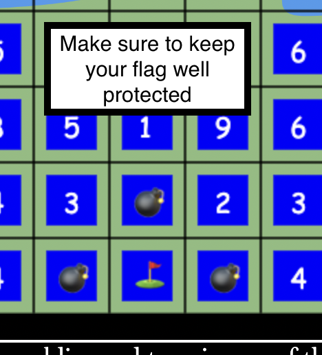

Instructions
Welcome to Stratego, the classic board game where two players face off in battle! In order to win, eliminate all of the enemy troops OR capture the enemy flag!
- Hard Mode: Select to activate Hard Mode. Red team will configure soldier ranks strategically at start of game. Note: can only be turned off by pressing reset.
- Instructions: links to this section. Can access before or during game.
- Choose Setup: Can be selected before the game starts. Player can then select a blue piece and fill in the desired rank. Once all ranks are filled, player can click Start to start the game.
- Randomize Setup: Can be selected before game start. Assigns each blue piece a random rank.
- Start: Click to start the game.
- Reset: Resets all game settings and wipes the game board. All game progress is lost.

- Set yourself up for victory by protecting your flag. It's best practice to place the flag in the back row surrounded by bombs. Make sure to keep a few strong pieces near the flag in case the enemy attacks!
- Once setup, the flag and bombs cannot be moved.
- Capture the enemy's flag before they capture yours!
- When it is your turn, you may move a soldier (that isn't a flag or bomb) one space horizontally or vertically. Blue lake spaces are impassable, as are spaces occupied by a teammate.
- To move, click on a soldier and press WASD or the Arrow Keys. If the space is valid, your character will move and your turn will end.

- Opponent soldiers' ranks are not revealed until they participate in at least one battle.
- If a soldier moves onto a space occupied by the enemy, the two soldiers will fight.
- For the most part, the player with the lower number will win. 1>2,3,4..., 2>3,4,5..., etc.
- If soldiers of equal rank meet, they will both be eliminated.
- Some soldiers have special properties
- Marshal (rank 1): Can defeat any soldier. However, if spy attacks it first, it will be eliminated.
- Spy (rank s): Can take out the enemy Marshal (rank 1) only if it (the spy) is the aggressor. Spy can only defeat the Marshal. If it attacks any other piece or is attacked by anything, it will be eliminated.
- Miner (rank 8): Can defuse and remove bombs.
- Bomb (rank b): Will eliminate any moving soldier, except the Miner. Cannot Move after game starts.
- Flag (rank f): If struck by any enemy, the flag is captured and the aggressor wins.